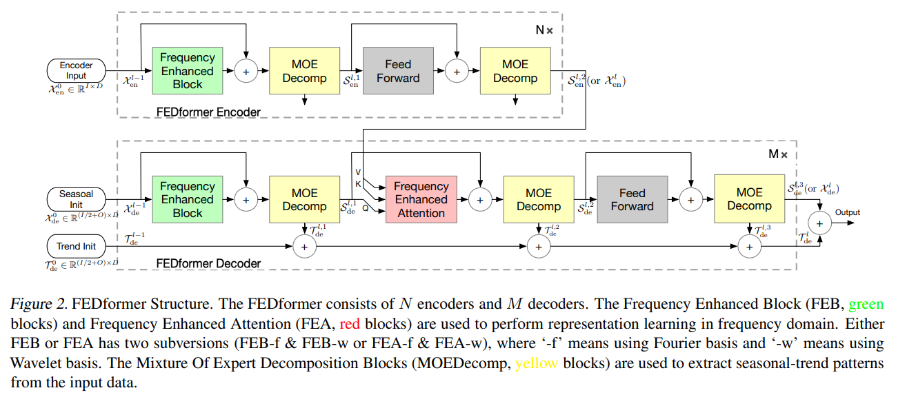
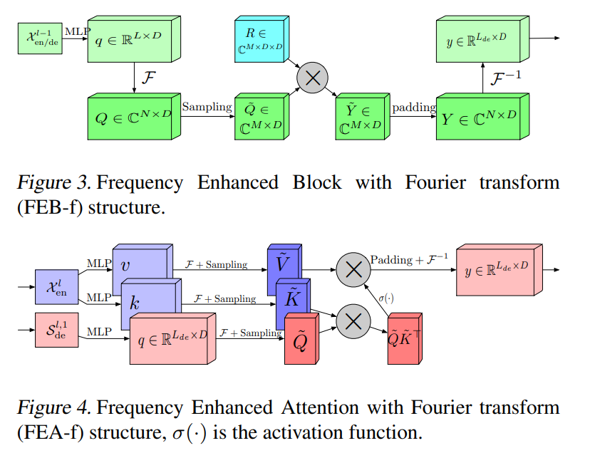
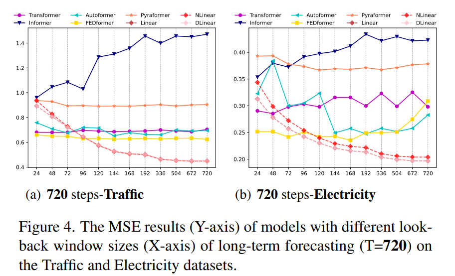
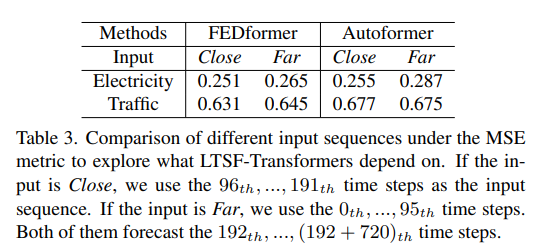
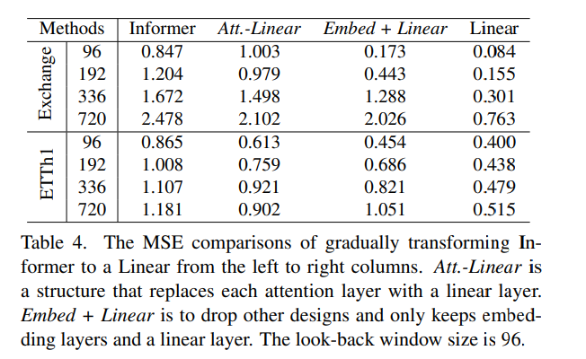
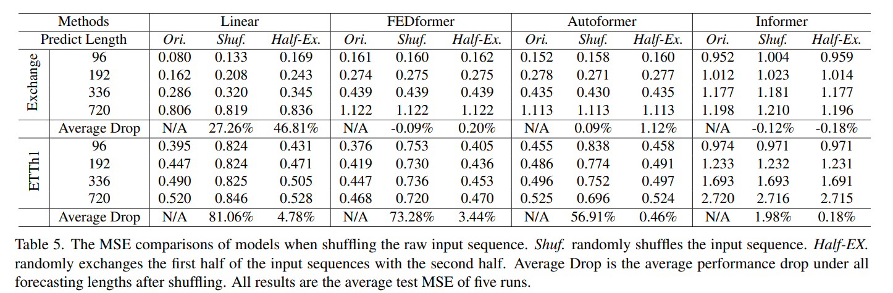
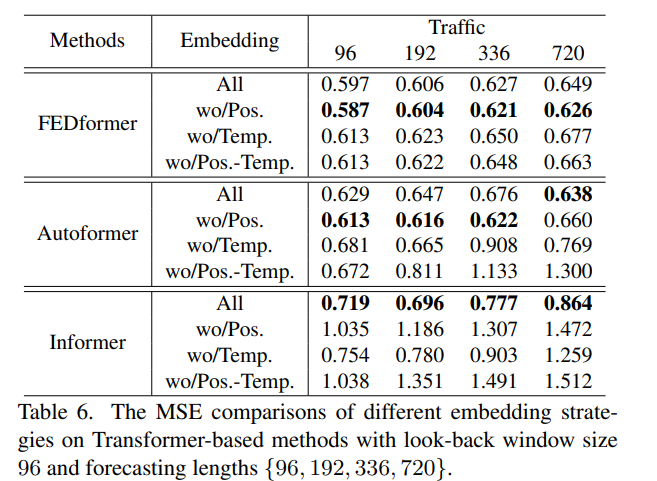
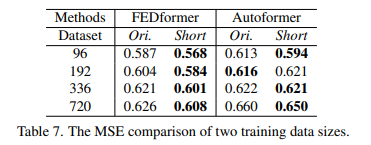

DLinear-Are Transformers Effective for Time Forecasting
这篇论文使用一个简单的线性层模型超过了众多Transformer系列复杂模型。不仅让人疑问：时序预测中Transformer的发展是否真的有效？
源代码。出自AAAI 2023
核心代码
核心代码比较简单，本质上是先使用卷积学习滑动平均，再减去滑动平均（时间序列去趋势化的惯用操作）。
1 | |
时间序列问题
对于历史数据L的序列，我们可以往后预测T个未来时间序列长度。
当T>1时，可以通过迭代单步预测来获得多步预测，也可以直接优化多步预测目标，前者称为iterated multi-step (IMS) forecasting，后者称为direct multi-step (DMS) forecasting。IMS会受到误差累积的影响。
Transformer的 有效性
Transformer的主要工作动力来自于它的多头自注意机制，它具有显著的提取长序列元素之间语义相关性的能力(例如，文本中的单词或图像中的二维补丁)。然而，自我注意在一定程度上具有排列不变性和“反序性”。虽然使用各种类型的位置编码技术可以保留一些有序信息，但在其上加上自注意后，仍然不可避免地存在时间信息丢失。对于语义丰富的应用程序，如自然语言中，这通常不是一个严重的问题。例如，即使我们重新排序其中的一些单词，句子的语义也会在很大程度上保留下来。然而，在分析时间序列数据时，通常数值数据本身缺乏语义，我们主要感兴趣的是对连续点之间的时间变化进行建模。也就是说，顺序本身起着最关键的作用。因此，我们提出了以下有趣的问题:变形金刚对长期时间序列预测真的有效吗?
基于Transformer的长时间序列预测方法

DLinear模型
DLinear模型首先将历史时间序列数据分解为趋势(Trend)数据$X_t\in \mathbb{R}^{L\times C}$ 和剩余(Remainder)数据$X_s=X-X_t$两部分，然后对分解得到的两个序列分别应用单层线性网络：
$$
H_s=W_sX_s\in\mathbb{R}^{T\times C},W_s\in \mathbb{R}^{T\times L}\
H_t=W_tX_t\in\mathbb{R}^{T\times C},W_t\in \mathbb{R}^{T\times L}
$$
最终的输出为，两个单层线性网络的输出结果相加：$\hat{X}=H_s+H_t$
另外，如果数据集的变量具有不同的特征，即不同的季节性和趋势，那么在不同变量之间共享权重可能表现不好。所以，文章设计了两种DLinear：
DLinear-S：每个变量共享相同的线性层；
DLinear-I：每个变量拥有独立的线性层。
模型代码
占位
实验结果
数据集设置
使用的数据集涉及交通、电力、天气、汇率等多个领域，均为多元时间序列。

Mean Squared Error (MSE) 和 Mean Absolute Error (MAE)
对比模型
六种Transformer-based方法：
（1）FEDformer（阿里达摩院出品，ICML 2022）


（2）Autoformer（NIPS 2021）


（3）Informer（AAAI 2021 Best Paper）


（4）Pyraformer（ICLR 2022）
（5）LogTrans（NIPS 2019）
（6）Reformer（ ICLR 2020）
朴素的DMS方法：Closest Repeat (Repeat-C)。即 repeats the last value in the look-back window

结果

最好的结果用粗体突出显示，transformer的最好结果用下划线突出显示。因此，与基于transformers的模型的结果相比，线性模型的结果是最好的。
现有的基于Transformer的TSF方法对于时间关系提取并不是很有效，DLinear是长期预测任务的强大基线。 FEDformer实现了相对较高的预测精度，可能是因为FEDformer不太依赖Transformer中的自注意力机制，相反，它采用了经典的时间序列分析技术，如傅里叶变换，这在时间特征提取中起着重要作用。
一些问题
问题一：现有的ltsf-transformer能否很好地从较长的输入序列中提取时间关系?
一般来说，一个强大的TSF模型，具有较强的时间关系提取能力，应该能够在更大的look back窗口尺寸下获得更好的结果。
现有的基于transformer的模型的性能随着回看窗口大小的增加而恶化或保持稳定。相比之下，所有LTSF-Linear的性能都随着回看窗口大小的增加而显著提高。因此，如果给定较长的序列，现有的解决方案倾向于过拟合时间噪声而不是提取时间信息，并且输入大小为96正好适用于大多数transformer。

问题二：我们可以从长期预测中学到什么
虽然回顾窗口中的时间动态对短期时间序列预测的准确性有显著影响，但我们假设长期预测仅取决于模型是否能够很好地捕捉趋势和周期性。也就是说，预测范围越远，回顾窗口本身的影响就越小。
为了验证上述假设，在表中，我们比较了来自两个不同回顾窗口的数据对相同未来720时间步的预测精度:(i)原始输入L=96设置(称为Close)和(ii)原始96时间步之前的远输入L=96设置(称为far)。

从实验结果来看，SOTAtransformer的性能略有下降，表明这些模型仅从相邻的时间序列序列中捕获相似的时间信息。由于捕获数据集的内在特征通常不需要大量的参数，例如。一个参数可以表示周期性。使用太多的参数甚至会导致过拟合，这部分解释了为什么LSTF-linear比基于transformer的方法表现得更好
问题三：self-attention 对LTSF是否一直有效?
我们验证现有Transformer(例如，Informer)中的这些复杂设计是否必要。在表4中，我们逐步将Informer转换为Linear。首先，我们将每个自注意层替换为一个线性层，称为Att .- linear，因为自注意层可以被视为一个权值动态变化的全连接层。
此外，我们在Informer中抛弃了其他辅助设计(例如FFN)，留下嵌入层和线性层，称为Embed + linear。最后，我们将模型简化为一个线性层。令人惊讶的是，Informer的性能随着逐渐简化而增长，这表明至少对于现有的LTSF基准测试来说，自关注方案和其他复杂模块是不必要的。

**问题四：**现有的Ltsf-Trasformer能很好地保持时间顺序吗?
总所周知自注意力是全局性的，不在乎顺序的。
然而，在时间序列预测中，序列顺序往往起着至关重要的作用。我们认为，即使使用位置和时间嵌入，现有的基于transformer的方法仍然遭受时间信息丢失。
在表中，我们在嵌入策略之前对原始输入进行洗牌。提出了两种洗牌策略:洗牌;随机洗牌整个输入序列和Half-Ex（将输入序列的前半部分与后半部分交换。）有趣的是，与Exchange Rate的原始设置(Ori.)相比，即使在随机打乱输入序列时，所有基于transformer的方法的性能也不会波动。相反，LTSF-Linear的性能会受到严重损害。这表明具有不同位置和时间嵌入的ltsf - transformer保留了相当有限的时间关系，并且容易对有噪声的金融数据进行过拟合，而LTSF-Linear可以自然地对顺序进行建模，并避免使用较少的参数进行过拟合。

**问题五：**不同的embedding策略效果如何?

在表中，没有位置嵌入(wo/Pos.)， Informer的预测误差大大增加。没有时间戳嵌入(wo/Temp.)会随着预测长度的增加而逐渐损害Informer的性能。由于Informer对每个令牌使用单个时间步长，因此有必要在令牌中引入时态信息。
FEDformer和Autoformer不是在每个令牌中使用单个时间步长，而是输入一系列时间戳来嵌入时间信息。因此，它们可以在没有固定位置嵌入的情况下获得相当甚至更好的性能。然而，如果没有时间戳嵌入，由于全局时间信息的丢失，自耦器的性能会迅速下降。相反，由于FEDformer中提出的频率增强模块引入了时间感应偏置，因此移除任何位置/时间戳嵌入的影响较小。
**问题六：**训练数据大小是现有ltsftransformer的限制因素吗?
完整数据集 (17,544*0.7 hours), 命名为Ori.,
短一些的数据集(8,760 hours, i.e., 1 year)

我们可以看出数据集变小甚至还使一部分性能变好了。
相关评价
知乎用户brightnova：我在自己的数据集上亲测，这篇论文的DLinear方法效果远远不如informer算法效果。
知乎用户蛋壳儿回复以上：算法和数据 是息息相关的，他这个算法 在周期性强的数据集上有很好的效果，和Autoformer一样.
Informer关注突变的关键数据，仔细看看注意力机制就知道了。
知乎用户stupidboys：我们的论文发现了在时间序列上正确使用transformer的方式，效果超越DLinear和其他formers，欢迎指正：A Time Series is Worth 64 Words: Long-term Forecasting with Transformers